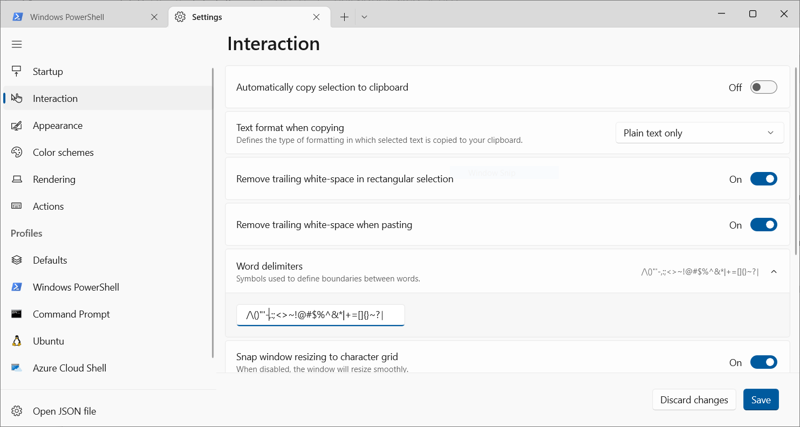
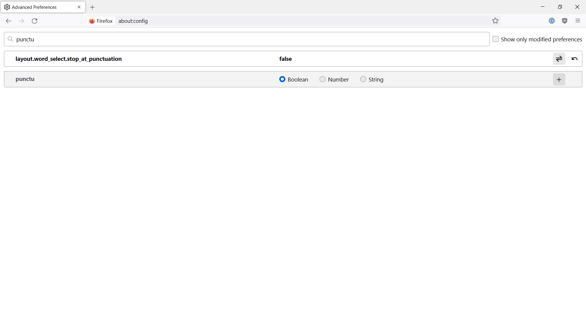

Highlight IP addresses with a double click in Windows Terminal and Firefox on Windows 10
Jun 20, 2022
I’ve always loved using my Mac for network engineering tasks - because it has a UNIX-like base it was kind of built from the ground up in a way that is suited to the task. I’ve recently tried to use a Windows laptop for network engineering work to not pigeon-hole myself to one specific platform. One of the seemingly small but high friction activities on Windows through the terminal by default is that when you double click an IPv4 address it only highlights the first octet. This seemingly small annoyance builds up over time when working with tons of IPs and usually causes me to shift back to macOS.
However, I recently learned about delimiters within the various OSes. From what I understand, macOS handles highlighting/double clicking on a system-wide level, while Windows allows each application to handle highlighting/double clicking independently.
In the Windows terminal settings, you can manually set your delimiters - this is where the magic happens.

Click on the down arrow at the top of the tab bar, then click on settings. Click “Interaction” on the left hand menu and there you will see an option for delimiters. Delete the period from the list, next to - and , and click save on the bottom right.
Now when you double click and IP it highlights the entire thing!

This is also possible to accomplish on Firefox as well (thanks to Major Hayden for finding and publishing this originally). Just go to about:config and change the “layout.word_select.stop_at_punctuation” setting to “false”.